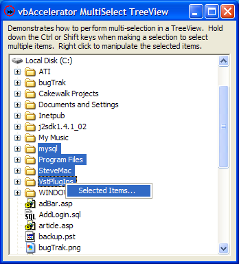

VB5 TreeView MultiSelect Sample (34K)
VB5 TreeView MultiSelect Sample (34K)
 VB6 TreeView MultiSelect Sample (32K)
VB6 TreeView MultiSelect Sample (32K)
 10 Mar 2004
10 Mar 2004
First Posted
 vbAccelerator TreeView Control
vbAccelerator TreeView Control

Multiple Selections in a TreeView
This example provides a class which you can attach to the vbAccelerator TreeView control to provide multiple selection support in a TreeView. Although Windows TreeView controls don't actually support multi-select, you can emulate it by using Owner-Drawing to set the colours of the nodes. This technique is similar to the one used in the Eclipse Java IDE.
Emulating Multiple Selects
In an owner-draw TreeView, you can change the colours used to draw the node in any state. By setting the colours of selected nodes to the normal background and foreground colours, the "real" selection in the TreeView is completely hidden. With that in place, you can start setting individual node's background and foreground colours so that the nodes appear to be selected.
Setting which nodes are then "selected" is simply a matter of setting the colours at the right time and responding to the selection modifier keys (shift and control) correctly.
A Class To Allow Multi-Selects
The TreeView control fires some of its notification events in an unexpected order. For example, SelectedNodeChanged fires before the MouseDown event. This makes the code to implement multi-select a little sensitive and hence a good candidate to wrap up in a class.
The first thing to sort out is setting the colours of a node so that it appears selected or not. The NodeSelected property of the class is used for this:
Public Property Let NodeSelected( _
node As cTreeViewNode, _
ByVal bState As Boolean _
)
Dim nodAlready As cTreeViewNode
On Error Resume Next
Set nodAlready = m_colSelected(node.Key)
On Error GoTo 0
If (bState) Then
If (nodAlready Is Nothing) Then
m_colSelected.Add node, node.Key
node.BackColor = vbHighlight
node.ForeColor = vbHighlightText
node.MouseOverBackColor = vbHighlight
node.MouseOverForeColor = vbHighlightText
node.SelectedMouseOverBackColor = vbHighlight
node.SelectedMouseOverForeColor = vbHighlightText
node.SelectedBackColor = vbHighlight
node.SelectedForeColor = vbHighlightText
node.SelectedNoFocusBackColor = vbHighlight
node.SelectedNoFocusForeColor = vbHighlightText
node.Text = node.Text
End If
Else
If Not (nodAlready Is Nothing) Then
m_colSelected.Remove nodAlready.Key
node.BackColor = vbWindowBackground
node.ForeColor = vbWindowText
node.MouseOverBackColor = vbWindowBackground
node.MouseOverForeColor = vbWindowText
node.SelectedMouseOverBackColor = vbWindowBackground
node.SelectedMouseOverForeColor = vbWindowText
node.SelectedBackColor = vbWindowBackground
node.SelectedForeColor = vbWindowText
node.SelectedNoFocusBackColor = vbWindowBackground
node.SelectedNoFocusForeColor = vbWindowText
node.Text = node.Text
End If
End If
End Property
In order to maintain the virtual selection state in an easily accessible way, a VB collection m_colSelected is used to store the list of selected nodes. This is also used to determine whether there is any need to change the colours of a node.
With that done, the logic to set the selections to the right state can be added. It turns out there are only two events you need to respond to: SelectedNodeChanged and MouseDown. The SelectedNodeChanged does not provide information about whether any of the shift modifier keys are pressed, so this needs to be discovered using the GetAsyncKeyState API. Also, the code needs to keep track of two nodes in order to perform correctly:
- The Last Selected Node, which is used to allow a node to be toggled selected/ unselected when an item is clicked and the control key is pressed.
- The "Selection Root", which is used to store the first node in a selection so that the correct items can be selected when the shift key is pressed.
The code to achieve that looks like this:
Private m_cNodeSelectionRoot As cTreeViewNode
Private m_colSelected As New Collection
Private m_lastSelectedItem As cTreeViewNode
Private m_bSelectionChanged As Boolean
Private WithEvents m_tvw As vbalTreeView
Private Declare Function GetAsyncKeyState Lib "user32" (ByVal vKey As Long) As Integer
Private Sub m_tvw_MouseDown( _
Button As Integer, Shift As Integer, _
x As Single, y As Single _
)
' Note we only need to do this on MouseDown, since
' the TreeView uses the Control key to allow scrolling
' when the mouse is not clicked.
If (Shift And vbCtrlMask) = vbCtrlMask Then
If Not (m_bSelectionChanged) Then
If Not (m_lastSelectedItem Is Nothing) Then
NodeSelected(m_lastSelectedItem) = Not (NodeSelected(m_lastSelectedItem))
End If
End If
End If
m_bSelectionChanged = False
End Sub
Private Sub m_tvw_SelectedNodeChanged()
Dim nodSelected As cTreeViewNode
'
m_bSelectionChanged = True
Set m_lastSelectedItem = m_tvw.SelectedItem
If Not (GetAsyncKeyState(vbKeyControl) = 0) Then
' Invert selection state for this node:
If Not (m_lastSelectedItem Is Nothing) Then
NodeSelected(m_lastSelectedItem) = Not (NodeSelected(m_lastSelectedItem))
End If
ElseIf Not (GetAsyncKeyState(vbKeyShift) = 0) Then
' Ensure all items between m_cNodeSelectionRoot and m_lastSelectedItem
' are selected, and anything else is not selected.
If Not (m_cNodeSelectionRoot Is Nothing) Then
If Not (m_lastSelectedItem Is Nothing) Then
SelectBetween m_tvw, m_cNodeSelectionRoot, m_lastSelectedItem
End If
End If
Else
' Clear anything that's selected
For Each nodSelected In m_colSelected
NodeSelected(nodSelected) = False
Next
Set m_colSelected = New Collection
Set m_cNodeSelectionRoot = m_lastSelectedItem
' Select this item if necessary
If Not (m_cNodeSelectionRoot Is Nothing) Then
NodeSelected(m_cNodeSelectionRoot) = True
End If
End If
'
End Sub
With that in place, all that's needed to complete the implementation is a way of selecting all the items in-betweeen two nodes. As with most things in a TreeView, this can be achieved using iteration:
Private Sub SelectBetween( _
tvw As vbalTreeView, _
node1 As cTreeViewNode, _
node2 As cTreeViewNode _
)
Dim bInSelection As Boolean
Dim bNoneFoundYet As Boolean
Dim nodStart As cTreeViewNode
Dim sKey1 As String
Dim sKey2 As String
Set m_colSelected = New Collection
Set nodStart = tvw.nodes(1)
sKey1 = node1.Key
sKey2 = node2.Key
iterateSelectBetween nodStart, sKey1, sKey2, bInSelection, True
End Sub
Private Sub iterateSelectBetween( _
nodStart As cTreeViewNode, _
ByVal sKey1 As String, ByVal sKey2 As String, _
ByRef bInSelection As Boolean, _
ByRef bNoneFoundYet As Boolean _
)
Do While Not (nodStart Is Nothing)
If Not (bInSelection) Then
If (bNoneFoundYet) Then
If (nodStart.Key = sKey1) Then
bInSelection = True
bNoneFoundYet = False
ElseIf (nodStart.Key = sKey2) Then
Dim sKeySwap As String
sKeySwap = sKey2
sKey2 = sKey1
sKey1 = sKeySwap
bInSelection = True
bNoneFoundYet = False
End If
End If
End If
NodeSelected(nodStart) = bInSelection
If (bInSelection) Then
If (nodStart.Key = sKey2) Then
bInSelection = False
End If
End If
If (nodStart.Expanded And nodStart.Children.count > 0) Then
iterateSelectBetween nodStart.Children(1), _
sKey1, sKey2, bInSelection, bNoneFoundYet
End If
Set nodStart = nodStart.NextSibling
Loop
End Sub
This procedure is fairly simple, the only thing to note is that the start node may be the first or the last in the selection, and so the code always iterates from the top of the control down to the bottom, and once it detects either of the two nodes which delimit the selection it then swaps them if necessary and only continues iteration until the other node is found.
Using the Class
Since the class incorporates a WithEvents instance of the TreeView control there's very little you need to do to use it. The only important thing is to make sure the NoCustomDraw property of the control is set to False before attempting to use the class (it defaults to True) otherwise the class will have no visible effect.
The following code snippet provides an example which shows the selected nodes in the debug Window when you right click the TreeView:
Private m_cTreeViewMultiSelect As cTreeViewMultiSelect
Private Sub Form_Load()
Set m_cTreeViewMultiSelect = New cTreeViewMultiSelect
m_cTreeViewMultiSelect.Attach tvwMultiSelect
End Sub
Private Sub tvwMultiSelect_NodeRightClick(node As cTreeViewNode)
'
If (m_cTreeViewMultiSelect.SelectionCount > 0) Then
Dim i As Long
For i = 1 to m_cTreeViewMultiSelect.SelectionCount
Debug.Print m_cTreeViewMultiSelect.SelectedNode(i).Text & _
" is selected."
Next i
End If
'
End Sub
Conclusion
This article demonstrates how to build a TreeView which allows multiple selections. Multiple selections in TreeViews are very helpful when you want to provide as many options as possible in as small a screen space as possible; a great example of this use is in the Eclipse Java IDE where you can use it to format, refactor or check-out multiple files from source control at the same time.